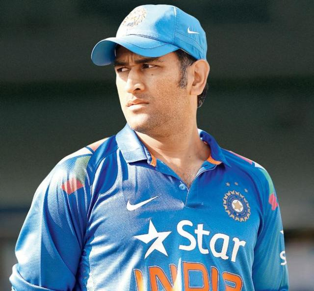
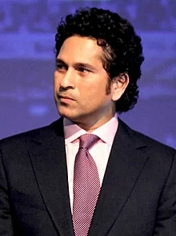

 Mahendra Singh Dhoni ( born 7 July 1981) is an Indian professional cricketer, who plays as a wicket-keeper-batsman. Widely regarded as one of the world's greatest wicket-keeper-batsmen and captains in the history of the sport,[a] he is known for his explosive batting, wicket-keeping and leadership skills.[9] He was the captain of the Indian national team in limited-overs formats from 2007 to 2017 and in Test cricket from 2008 to 2014. He plays for and captains Chennai Super Kings franchise in the Indian Premier League. Born in Ranchi, Bihar (now in Jharkhand),[10][11] His exceptional wicketkeeping skills allowed him to become the regular wicketkeeper at the Commando Cricket Club (1995–1998), he was picked for the 1997/98 season Vinoo Mankad Trophy Under-16 Championship, where he performed well.[12] From 2001 to 2003, He worked as a Travelling Ticket Examiner at Kharagpur railway station under South Eastern Railway in Midnapore, in West Bengal.[13][14] In Indian domestic cricket he played for Bihar and then for Jharkhand Cricket team. Dhoni's performance in the 2002–03 season included three half-centuries in the Ranji Trophy and a couple of half-centuries in the Deodhar Trophy, as he started gaining recognition for his lower-order contribution as well as hard-hitting batting style.[citation needed]
 Sachin Ramesh Tendulkar, (born 24 April 1973) is an Indian former international cricketer who captained the Indian national team. He is widely regarded as one of the greatest batsmen in the history of cricket.[4] Hailed as the world's most prolific batsman of all time, he is the all-time highest run-scorer in both ODI and Test cricket with more than 18,000 runs and 15,000 runs, respectively.[5] He also holds the record for receiving the most player of the match awards in international cricket.[6] Tendulkar was a Member of Parliament, Rajya Sabha by nomination from 2012 to 2018.[7][8] Tendulkar took up cricket at the age of eleven, made his Test match debut on 15 November 1989 against Pakistan in Karachi at the age of sixteen, and went on to represent Mumbai domestically and India internationally for over 24 years.[9] In 2002, halfway through his career, Wisden ranked him the second-greatest Test batsman of all time, behind Don Bradman, and the second-greatest ODI batsman of all time, behind Viv Richards.[10] The same year, Tendulkar was a part of the team that was one of the joint-winners of the 2002 ICC Champions Trophy. Later in his career, Tendulkar was part of the Indian team that won the 2011 Cricket World Cup, his first win in six World Cup appearances for India.[11] He had previously been named "Player of the Tournament" at the 2003 World Cup.